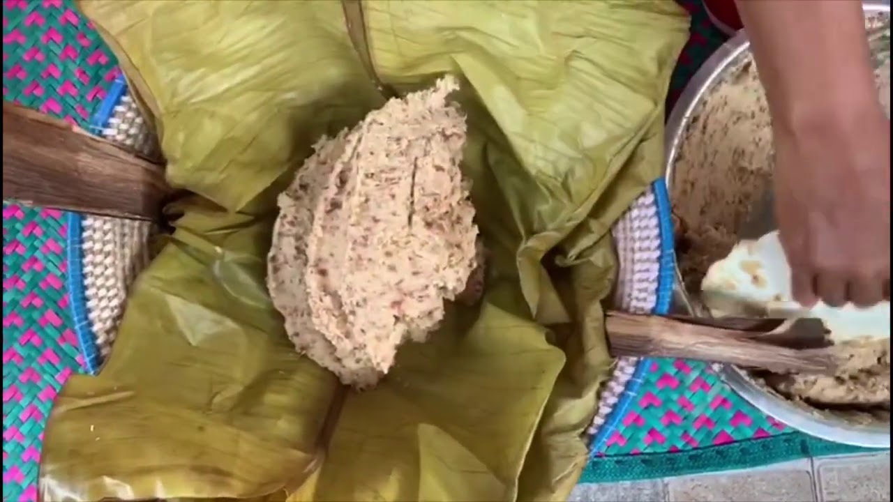

Mugoyo Recipe!Get statisfied with ease.

About the Recipe
Availability of food has raised diffrent stlyes of preparing food.
Aciently called Mugoyo Sweetpotates and beans smashed is another dish highly consumed not only by locals but also in 5Star hotels espaciallyin Busoga Region
Ingredients
- Sweetpotates
- Beans
- Onions
- Tomatoes
- Cook Beans mixed wit choped tomatoes
- Peel and chop Sweetpotates mix them with bioled beans for 1 hour
- Smash the both the beans and sweetpotatoes
- Its ready for eating
For the love of sweetpotatoes